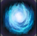

the tiny master of evil
Veigar
An enthusiastic master of dark sorcery, Veigar has embraced powers that few mortals dare approach. As a free-spirited inhabitant of Bandle City, he longed to push beyond the limitations of yordle magic, and turned instead to arcane texts that had been hidden away for thousands of years. Now a stubborn creature with an endless fascination for the mysteries of the universe, Veigar is often underestimated by others—but even though he believes himself truly evil, he possesses an inner morality that leads some to question his deeper motivations.
Character type
Veigar is one of 166 Champions of league of legends. Usually played in the midlane, Veigar is an immobile burst mage, relying on massive amounts of burst damage in one go using his abilites. He has a very weak early game but massive mid to late game due to his passive, Phonemenal Evil Power.
As most champions in the game, he has 3 active abilities, one passive and one ultimate ability.
Abilities
Phonemenal evil power
Phonemenal Evil Power is Veigar's Passive. For every minions farmed with Veigar's Baleful strike(Q),
He stacks one extra Ability Power for the rest of the game. This also applies for all abilities hit on a champion. Veigar will
also stack 5 extra Ability power for every champion takedown. Due to this passive, Veigar's power spike comes in more towards
the mid-game to late-game from around 15 minutes onward assuming Veigar has stacked more than 150 extra Ability Power by this point.
When farming minions, It is very imperative that the player to last hit with his Baleful Strike(Q) as much as possible to get more Ability Power. Poking out the enemy
laner is also very good to keep stacking your passive. If the player has done very well at stacking their passive, Veigar will be very dangerous towards the late game amassing a possible 1k+ Ability Power.
-
Baleful Strike

Baleful strike is Veigar's Q ability. It is a straight line skill shot that deals magic damage + a percentage of Veigar's current Ability Power scaling towards how many points of level is put on this ability. When maxed out, it deals a base 240 magic damage adding on 65% of his current
Ability Power. As mentioned before, hitting baleful strike(Q) on enemy champions as well as last hits on minions will grant one permanent
Ability power. This is Veigar's main damage dealing ability and useful for poking out the enemy.
Dark Matter
Dark Matter is another active ability for Veigar, casted using the W button. It is a skill shot where Veigar casts down a powerful burst of dark matter that will
strike down the target location after a 1.2 seconds delay, dealing a certain amount of Magic Damage. When maxed out, Dark matter deals 305 base magic damage with an additional 110% of your current Ability Power. Along with Baleful Strike(Q), Hitting an enemy champion with Dark Matter(W)
grants one permanent Ability Power to his Phonemenal Evil Power. Landing Dark Matter is very hard due to its very telegraphed cast time, but since its cooldown gets reduced
with Veigar's Phonemenal Evil Power stacks, it can become a very powerful zoning tool that you are allowed to spam.
Event Horizon

Event Horizon is Veigar's active ability on his E. When casted, it forms a cage at the target location that erects after a .5s delay and stays there for 3 seconds. If the enemy units
or champion touches the walls of the cage, they are stunned scaled on the amount of skill points used on his E. Event Horizon is Veigar's powerful Crowd Control ability which if used correctly,
will allow Veigar to land all of his abilities a lot easier. Along with his other abilities, if an enemy gets stunned by his E it procs his phonemenal evil power and gives Veigar one additional Ability power
Primordial burst
This is Veigar's Ultimate, casted using the R button. When casted, Veigar channels a primordial power and sends it towards the enemy champion dealing a massive
amounts of burst damage scaled depending on the amount of missing health from the enemy. Primordial Burst works a lot like an execute
and deals more damage the lower health the enemy is. When maxed out, it deals a base 325 Magic damage with an additional 75% of your current Ability Power.
This is a targeted ability meaning that you only need to press R and point your mouse at the enemy and it will automatically aim and hit your target.
Veigar gameplan and strategies
Veigar enjoys a very burst damage heavy kit, with a powerful crowd control and leans into his mid-game to late-game power spike.
The most important thing to a Veigar player is his phonemenal evil power stacks, as it provides free and permanent Ability Power so getting yourself fed in the early game is a must.
Early-game
His early game is where he is weakest, dealing a low amount of damage with no mobility and a less than usable auto attack so you want to be playing very safe during laning phase.
You should be getting last hits on minions using his baleful strike/Q to continue stacking your phonemenal evil power. As much as possible, avoid taking fights with enemy lane opponent(especially if they are an assasin) and only
try to poke them out, unless you want to give them a free kill since you are very squishy and vulnerable. When available, Try to look for a roam to bot lane to get a kill or an assist as this
will grant you 5 extra Ability power stacks to your phonemenal evil power. You can push in your minion wave into the enemy side's turret so it pressures them to make a decision whether to respond to what you're doing
when you look for a roam and skirmish fights with your jungler or taking the minion wave so they don't lose as much gold and experience. Using your powerful
crowd control in Event horizon will make setting up ambushes and getting kills in bot lane very easy.
Mid-game
Transitioning into mid-game where you have at least one or two items now and at least more than 100 stacks makes it way easier for Veigar
(assuming that you have stacked Phonemenal evil power very well during laning phase). You will now want to push in lanes with minions and take down towers. Veigar's high Ability Power and AOE abilities
allow him to wave clear fast and shred through towers. Still be careful of enemy champions and ambushes as you are very vulnerable and will likely die. Continue stacking your
phonemenal evil power to get your massive late game power spike when you have more items. When objectives are up you will want to play with your teammates as you will be a teamfigthing
demon due to your crowd control ability in Event Horizon as well as your area denial AOE with Dark Matter.
Late-game
Late game is where Veigar becomes a one shot monster. He has very spammable abilities, especially his Dark Matter if Phonemenal Evil Power is stacked well. You now deal
a massive amounts of burst damage with an assumed 200+(if done very well even 300+) extra Ability power. This allows you to one shot most squishies and shred through tanks. Your gameplan
remains the same with pushing in lanes and shredding through towers. As with the mid game, You will want to stay with your teammates for teamfights as you are a teamfight god
using your Crowd control abilities. Now with all this knowledge, Go now and destroy the enemy team and eat their souls :).